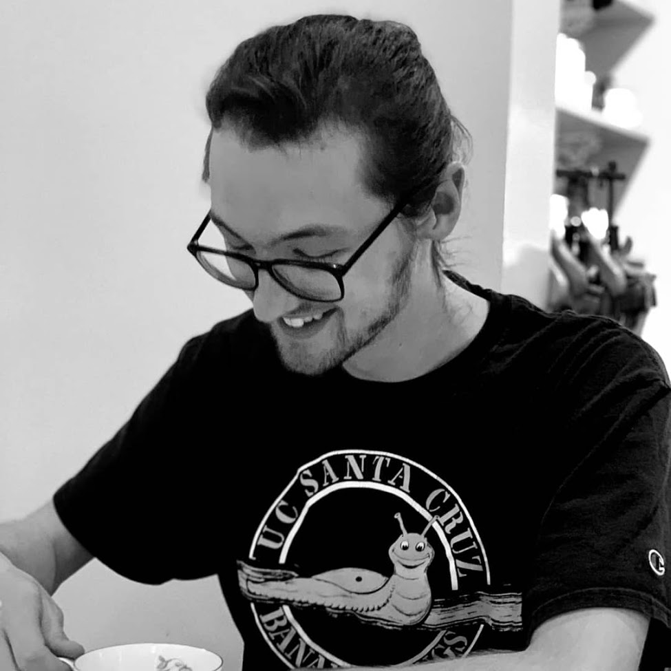

ABOUT

What's up! I'm Ben Paulsen, and I'm studying Computer Science: Game Design at the University of California, Santa Cruz.
I'm currently working on a multiplayer space fleet battler, and a platformer about queer time.
GAMES